此题来自 RCTF 2018 的一道逆向题目 magic. 赛后分析许久, 看了几个 writeup, 但是始终不得要领, 大神们寥寥数语, 扔下一堆代码, 就搞定问题. 也理解这寥寥数语, 毕竟比赛的时候时间紧张, 做出题目后就开始下一道了, 而赛后, 大多也会因为一些乱七八糟的事情不再去整理题解. 最终在网上留下的就是一份草稿版题解, 对于我这样的新手, 实在是难.
本着分享知识, 就分享让大家能看的懂的原则, 在这里写一份题解. 希望对于新手有所帮助.
本文涉及到的知识点有
我并非逐一罗列这些知识点, 而是从拿到程序, 一步步往下走, 遇到什么说什么, 直到最后找到 flag 为止.
一个 IDA Pro 和 Windows 足矣.
但是因为我用的是 mac 笔记本, 安装的 IDA Pro 7.0, 虚拟机是 VirtualBox 中安装的 Windows 10, 有些路径需要根据你自己的环境进行配置.
解压 magic_9761645341b9b91421388b9631cb6877.zip 后, 我们将会得到一个 magic.exe. 是骡子是马拉出来溜溜, 运行一下程序, 提示如下:
flag only appears at a specific time, range [2018-05-19 09:00, 2018-05-21 09:00) Better luck next time :)
用 file 简要看一下信息(workshop 是我的工作目录)
➜ workshop file magic.exe magic.exe: PE32+ executable (console) x86-64 (stripped to external PDB), for MS Windows
因为是 Windows 64 位程序, 我们设置一下 IDA 的编译器选项, 依次 Options/Compiler, 确保设置如下, 如果你不设置的话, IDA 用 Linux x64 的约定来分析函数, 分析出来的函数参数都是错误的, 我在这上面踩了很大一个坑.
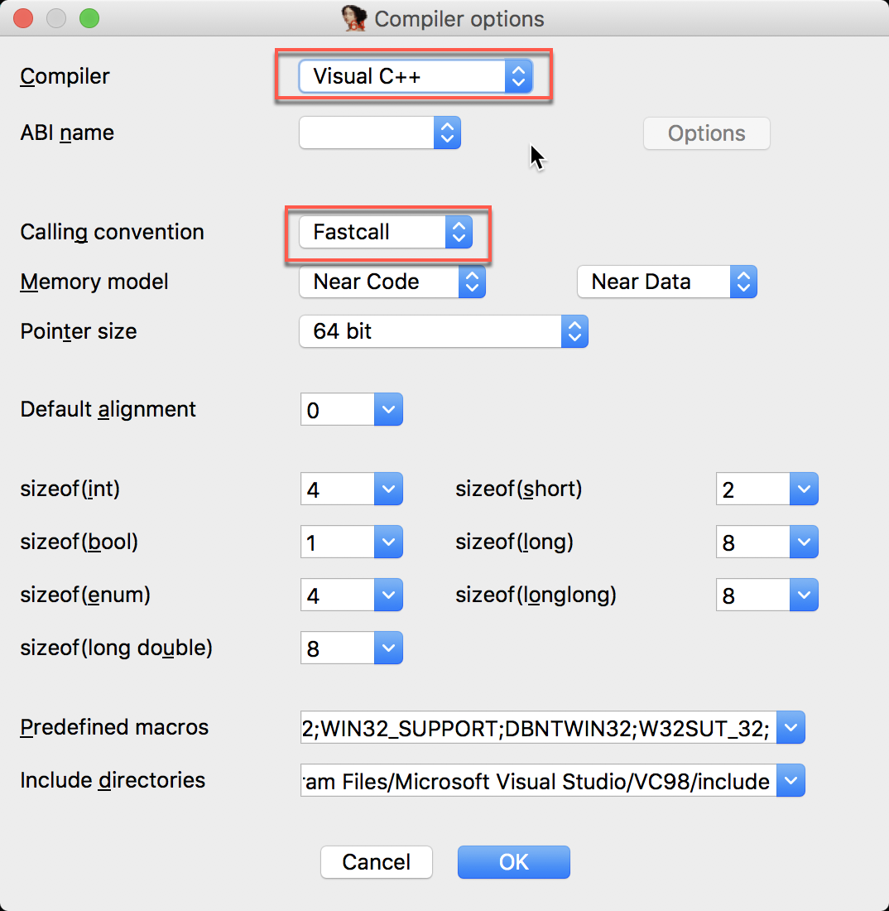因此让我们用 ida64 打开该程序, 打开字符串窗口(shift+F12), 搜索上面的"flag only appears ..." 字符串, 得到如下一条结果.
.rdata:0000000000406018 0000006A C flag only appears at a specific time, range [2018-05-19 09:00, 2018-05-21 09:00)\nBetter luck next time :)
通过交叉引用, 可以定位到该字符串位于 0x4025B4. 然后我们动态调试一下,如何动态调试呢? 我这里是在 Mac 中运行 IDA, 然后 VirtualBox 中的 Windows 虚拟机, 首先在 Windows 虚拟机中运行 IDA 提供的 win64_remote64.exe, 获取虚拟机的 ip 地址 (我的为 192.168.56.102), 然后 win64_remote64 就会监听 23946 端口等待连接. 在 IDA 中 按下 F9, 选择调试器, 如下
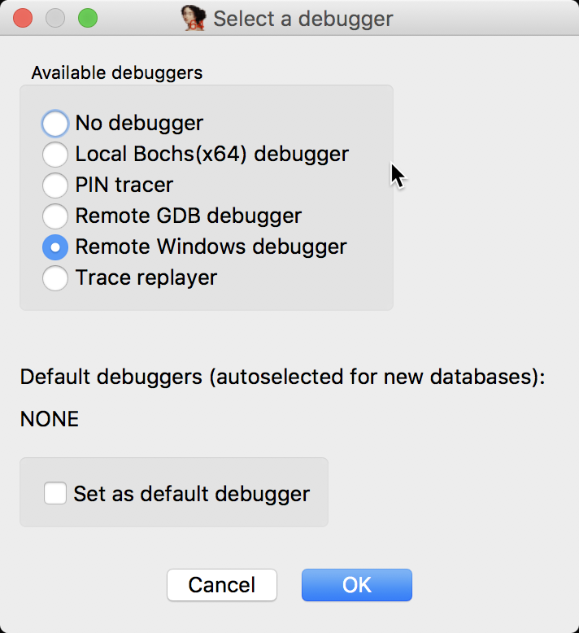然后依次 Debugger/Process Options 打开如下界面, 并设置正确的路径, 设置的路径都是远程主机上的路径. 如下所示
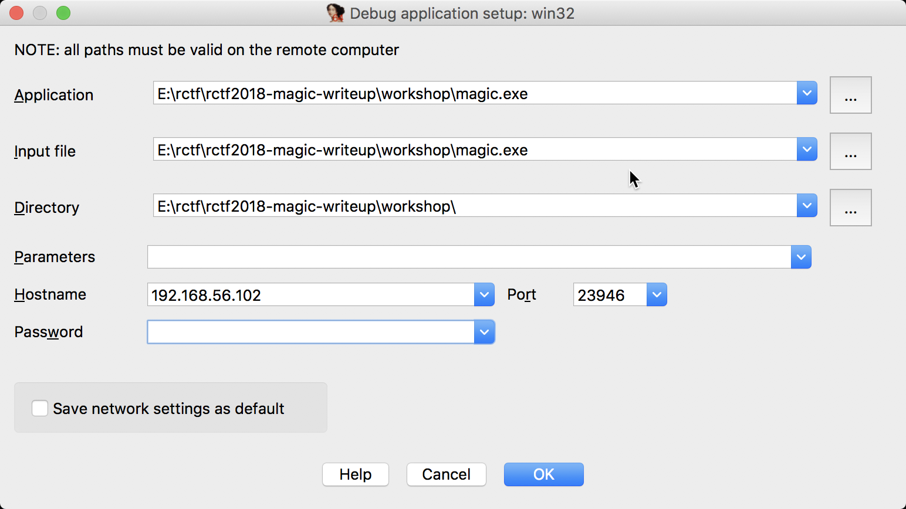由于0x4025B4 位于 main 函数中, 我们可以在 main 函数开头(0x402563)和 0x4025B4 处设置断点, 然后就可以按下 F9 运行程序了. 我们发现, 在 main 函数开头处断下来时, 程序已经输出了 "flag only appears at a specific time ..." 这一句话, 说明在 main 函数执行之前有其他操作, 并且操作应该是解密字符串并打印. 那我们怎么找到底是哪里打印呢? 借助 trace 功能.
我们用交叉引用可以知道 sub_4011B0() 调用了 main. 所以我们在 0x4011B0 处下断点, 保持 main 处的断点, 然后依次选择 Debugger/Tracing/Function Tracing. F9 运行程序后, 程序中断在 main 函数处, 我们 Debugger/Tracing/Trace Window 打开 Trace 窗口, 内容如下
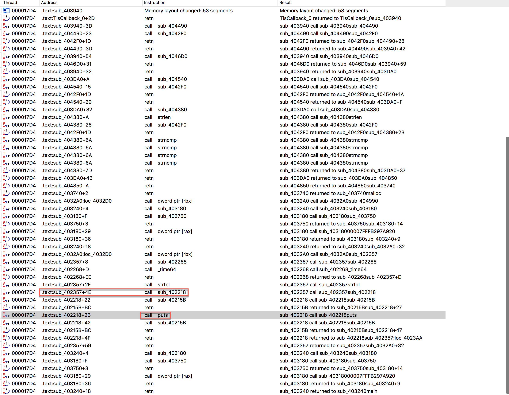于是我们就知道, 在 0x402218 + 0x2B 处调用了打印函数, 往上看, 我们可以知道是 sub_402357 调用了 0x402218 函数. 我们可以以这个为线索, 看看代码.
sub_402218() 如下所示
__int64 __fastcall sub_402218(const char *a1, __int64 a2, int a3, __int64 a4)
{
v7 = a1;
v8 = a2;
v9 = a3;
sub_40215B(a1, a2, a3, a4);
v4 = puts(v7);
sub_40215B(v7, v8, v9, v5);
return v4;
}
对一个字符串先解密, 打印, 然后再加密. 这里打印的就是 "flag only appears ...". 然后去看一下 sub_402357() 函数. 这个函数如下.
__int64 __fastcall sub_402357(const char *a1, char **a2)
{
__int64 result; // rax
int v3; // eax
__int64 v4; // r9
sub_402268(a1, a2);
result = dword_4099D0[0];
if ( !dword_4099D0[0] )
{
v3 = strtol("ca11ab1e", 0i64, 16);
result = sub_402218(&unk_405220, 105i64, v3 ^ 0xBADD1917, v4);
}
return result;
}
如果 dword_4099D0[0] 为 false, 则调用 sub_402218(), 说明失败. 因此dword_4099D0[0] 应为 true. dword_4099D0[0] 的值应该是在其上的 sub_402268() 中设置的. 我们来查看这个函数. 我把这个函数重命名为 check_time. 进入该函数看一下, 将一些变量, 函数的名字, 类型等重命名一下, 得到如下

上述代码里面, istimeok 变量 ida 将其识别为 int64 类型的, 然后传入 check_secret 函数时为 (int64)&check_secret, (int64)&check_secret+4, 从这一点我们可以看出这个变量可能是一个长度为 2 的 DWORD 类型数组. 于是将其重定义为 DWORD istimeok[2] 即可. check_secret 的参数个数也不对, 默认的 IDA 给出了四个参数, 最后一个参数没用到, 查看汇编代码,发现 check_secret 的参数实际上为 3 个(rcx, rdx, r8), 所以将其参数类型重定义为 _DWORD *__fastcall check_secret(BYTE *secret, DWORD *a2, DWORD *a3). 经过这样稍微整理之后, 代码看起来清晰了许多.
逻辑大概是这样的: 程序运行时, 先计算运行的时间, 看时间戳是否位于 (0x5AFFE78F,0x5B028A8F]. 如果时间戳范围正确, 则根据时间戳生成一个种子, 把 secret 数组和 rand() 随机数进行运算并保存. 然后传入 check_secret 进行检查. check_secret 函数计算完成后, 会对 istimeok 进行设置, 如果计算结果 istimeok[1] 的值为 1792 说明正确, dword_4099D0[0] 应该会被赋予一个非零值(因为在 else 分支中 dword_4099D0[0] 被赋予了一个 0 值).
注意一下 srand 函数, 传入一个一定的初始值, rand() 函数生成的随机数将是一个固定的序列. 但是要注意的是, 这个固定序列在不同平台下, 生成的伪随机序列是不一致的, 在 Windows 平台下, 该函数在同一初始种子的情况下, 生成相同的随机序列. 这就要求我们爆破时间戳的时候, 程序应该在 Windows 下跑.
如果我们得到了正确的时间戳, 那么 check_secret 执行后, istimeok[1] 的值应该是 1792. 所以暴力破解前, 需要弄清楚 check_secret 的功能. 这是本题目的第一个障碍.
进入 check_secret, 其代码如下
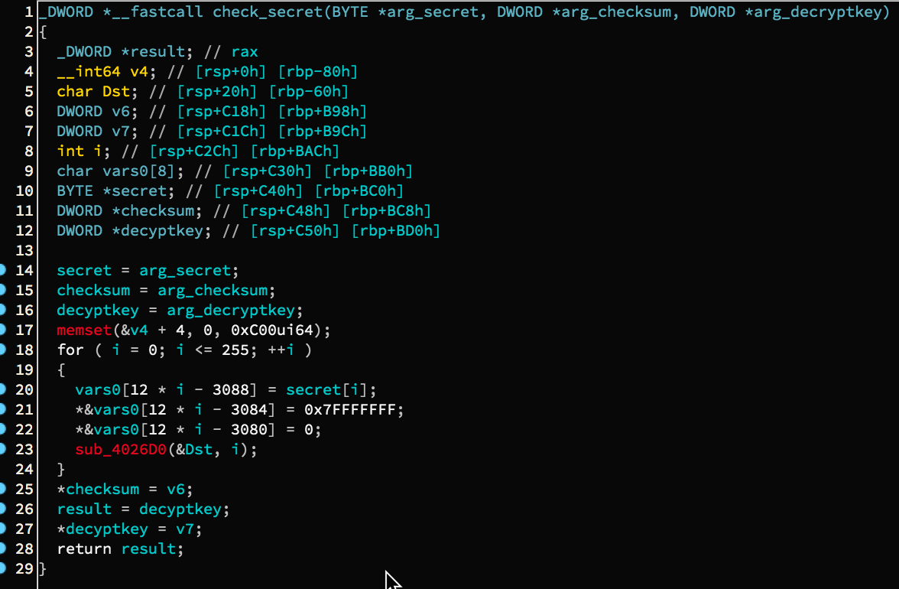这样子看, 让人看的很迷茫, v4 是干什么的, 以及 vars0 是干什么的, 感觉变量都是直接空降, 一脸懵逼. 这个时候就是该看汇编代码的时候了.
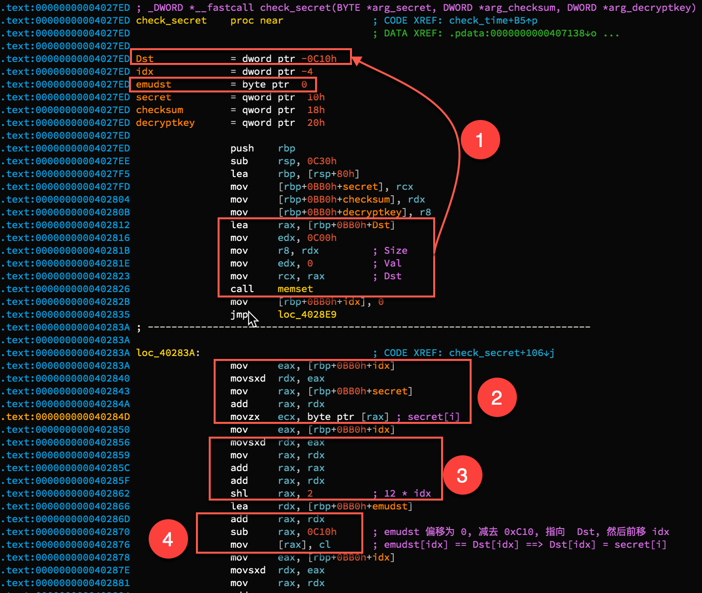1 处使用 memset 对 Dst 进行置零操作, 注意 Dst 的偏移是 -0C10h, emudst 的偏移地址是 0. 2 处获取到 secret[i], 3 处计算了一个偏移值, 每次循环向前移动 12 字节, 所以是 12 * idx, idx 表示当前索引值. 4 处是重点, 由于 emudst 偏移为 0, 减去 0C10 后, 正好指向 Dst, 然后前移 idx, 相当于 Dst[i]. 所以我们明白, 实际上, emudst 和 Dst 是同一个东西. 而且我们看到循环中每次前移 12 字节, 分为三次赋值, 所以 Dst 的类型 为 DWORD, 大小为 0xc00/ 4 = 768. 在反编译窗口中对 Dst 类型重定义为 DWORD Dst[768], 发现反编译代码变成如下所示
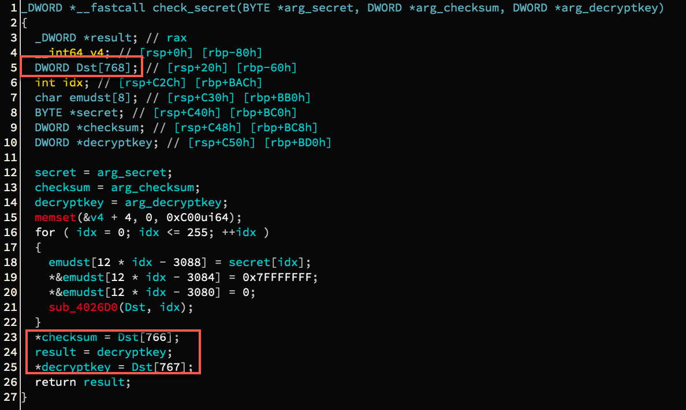让人不知所措的 v6, v7 已经消失不见了, 代码逻辑也清晰可见. 对于 v4 我们可以视而不见, 我们只需要知道 memst 是对 Dst 置零, 然后循环中, 从 Dst 开始, 每次处理三个元素, 然后交给 sub_4026D0 处理, 当所有循环完成后, 检查 Dst 的最后两个元素.
于是, 现在的问题变成分析 sub_4026D0 的逻辑. 如下
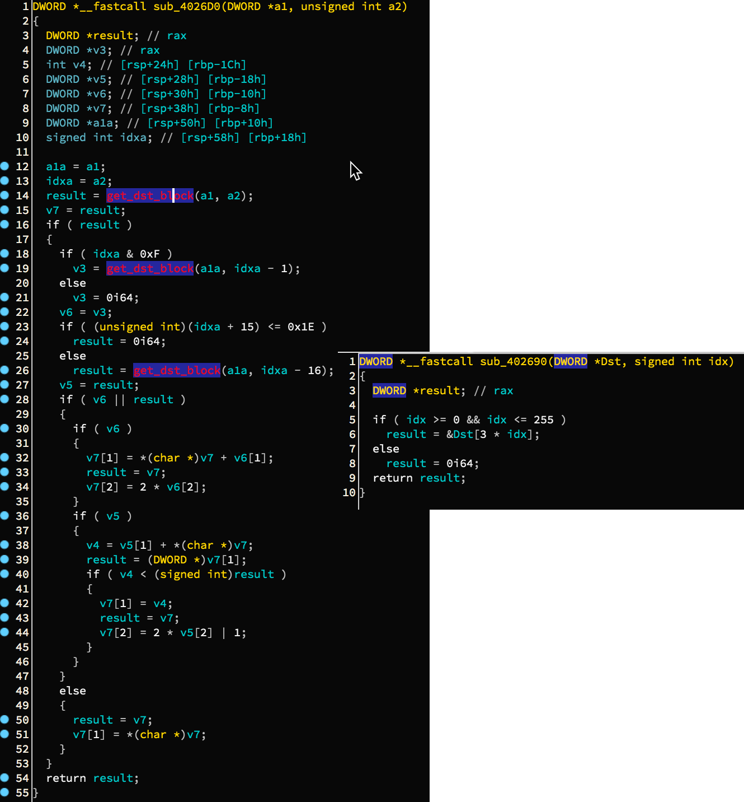这个代码其实没什么可说的, 一大堆操作逻辑, 其中的 get_dst_block 用于获取当前循环 的三个元素, 即对于循环 idx, 返回 Dst + idx * 3. 我们爆破的时候, 直接使用这些代码 , 做一些微调即可使用. 复制代码的时候记得加上启用 IDA 的强制类型转换, 移除不必要的函数调用约定, 比如 fastcall, 修正一些 C 编译器无法识别的写法, 如 0i64. 参考代码如下
#include <stdlib.h>
#include <time.h>
#include <stdio.h>
#include <ctype.h>
#include <string.h>
#include <inttypes.h>
#include <windows.h>
#define BYTE uint8_t
#define WORD uint16_t
#define DWORD uint32_t
#define QWORD uint64_t
DWORD* get_dst_block(DWORD *Dst, signed int idx)
{
DWORD *result; // rax
if ( idx >= 0 && idx <= 255 )
result = &Dst[3 * idx];
else
result = 0;
return result;
}
void sub_4026D0(DWORD *a1, unsigned int a2)
{
DWORD *result; // rax
DWORD *v3; // rax
int v4; // [rsp+24h] [rbp-1Ch]
DWORD *v5; // [rsp+28h] [rbp-18h]
DWORD *v6; // [rsp+30h] [rbp-10h]
DWORD *v7; // [rsp+38h] [rbp-8h]
DWORD *a1a; // [rsp+50h] [rbp+10h]
signed int idxa; // [rsp+58h] [rbp+18h]
a1a = a1;
idxa = a2;
result = get_dst_block(a1, a2);
v7 = result;
if ( result )
{
if ( idxa & 0xF )
v3 = get_dst_block(a1a, idxa - 1);
else
v3 = 0;
v6 = v3;
if ( (unsigned int)(idxa + 15) <= 0x1E )
result = 0;
else
result = get_dst_block(a1a, idxa - 16);
v5 = result;
if ( v6 || result )
{
if ( v6 )
{
v7[1] = *(char *)v7 + v6[1];
result = v7;
v7[2] = 2 * v6[2];
}
if ( v5 )
{
v4 = v5[1] + *(char *)v7;
result = (DWORD *)v7[1];
if ( v4 < (signed int)result )
{
v7[1] = v4;
result = v7;
v7[2] = 2 * v5[2] | 1;
}
}
}
else
{
result = v7;
v7[1] = *(char *)v7;
}
}
}
int main()
{
int min_epoch = 1526720399 + 1;
int max_epoch = 1526893199;
BYTE secret[] = {0x58,0x71,0x8f,0x32,0x5,0x6,0x51,0xc7,0xa7,0xf8,0x3a,0xe1,0x6,0x48,0x82,0x9,0xa1,0x12,0x9f,0x7c,0xb8,0x2a,0x6f,0x95,0xfd,0xd0,0x67,0xc8,0xe3,0xce,0xab,0x12,0x1f,0x98,0x6b,0x14,0xea,0x89,0x90,0x21,0x2d,0xfd,0x9a,0xbb,0x47,0xcc,0xea,0x9c,0xd7,0x50,0x27,0xaf,0xb9,0x77,0xdf,0xc5,0xe9,0xe1,0x50,0xd3,0x38,0x89,0xef,0x2d,0x72,0xc2,0xdf,0xf3,0x7d,0x7d,0x65,0x95,0xed,0x13,0x0,0x1c,0xa3,0x3c,0xe3,0x57,0xe3,0xf7,0xf7,0x2c,0x73,0x88,0x34,0xb1,0x62,0xd3,0x37,0x19,0x26,0xbe,0xb2,0x33,0x20,0x3f,0x60,0x39,0x87,0xa6,0x65,0xad,0x73,0x1a,0x6d,0x49,0x33,0x49,0xc0,0x56,0x0,0xbe,0xa,0xcf,0x28,0x7e,0x8e,0x69,0x87,0xe1,0x5,0x88,0xda,0x54,0x3e,0x3c,0xe,0xa9,0xfa,0xd7,0x7f,0x4e,0x44,0xc6,0x9a,0xa,0xd2,0x98,0x6a,0xa4,0x19,0x6d,0x8c,0xe1,0xf9,0x30,0xe5,0xff,0x33,0x4a,0xa9,0x52,0x3a,0xd,0x67,0x20,0x1d,0xbf,0x36,0x3e,0xe8,0x56,0xbf,0x5a,0x88,0xa8,0x69,0xd6,0xab,0x52,0xf1,0x14,0xf2,0xd7,0xef,0x92,0xf7,0xa0,0x70,0xa1,0xef,0xe3,0x1f,0x66,0x2b,0x97,0xf6,0x2b,0x30,0xf,0xb0,0xb4,0xc0,0xfe,0xa6,0x62,0xfd,0xe6,0x4c,0x39,0xcf,0x20,0xb3,0x10,0x60,0x9f,0x34,0xbe,0xb2,0x1c,0x3b,0x6b,0x1d,0xdf,0x53,0x72,0xf2,0xfa,0xb1,0x51,0x82,0x4,0x30,0x56,0x1f,0x37,0x72,0x7a,0x97,0x50,0x29,0x86,0x4a,0x9,0x3c,0x59,0xc4,0x41,0x71,0xf8,0x1a,0xd2,0x30,0x88,0x63,0xff,0x85,0xde,0x24,0x8c,0xc3,0x37,0x14,0xc7};
DWORD Dst[768];
BYTE buf[256];
for(int epoch = min_epoch; epoch <= max_epoch; ++epoch)
{
srand(epoch);
/*
* Do not write like this(since we are doing force brute....):
* for(int i = 0; i <= 255; ++i) secret[i] ^= rand();
* This is the right way:
* for(int i = 0; i <= 255; ++i) buf[i] = secret[i] ^ rand();
*/
for(int i = 0; i <= 255; ++i) buf[i] = secret[i] ^ rand();
memset(Dst,0,0xc00);
for(int i =0; i <= 255; ++i)
{
/*
* Note that this is a byte assignment, not a DWORD.
* We could confirm through the corresponding assembly
* code: "mov [rax], cl". In fact, here is an alignment
* in 4 bytes.
*/
Dst[3 * i] = buf[i];
Dst[3 * i + 1] = 0x7FFFFFFF;
Dst[3 * i + 2] = 0;
sub_4026D0(Dst, i);
}
DWORD checksum = Dst[766];
DWORD decryptkey = Dst[767];
if(checksum == 0x700)
{
printf("epoch is found!\n");
printf("EPOCH = %#x decryptkey = %#x\n", epoch, decryptkey);
break;
}
}
printf("DONE!\n");
/*
* epoch is found!
* EPOCH = 0x5b00e398 decryptkey = 0x322ce7a4
* DONE!
*/
return 0;
}
IDA 在强制类型转换的时候, 自己定义了一些宏指令, 这些宏指令具体意思可以在 这里 查找.
使用 i686-w64-mingw32-gcc solve.c -o solve.exe 交叉编译生成 exe, 扔到虚拟机里面, 得出结果为 EPOCH = 0x5b00e398 decryptkey = 0x322ce7a4.
感觉走了很远的路, 该回头啦. 回到我们的 check_time 中. 我们找到了正确的时间戳, 并附带得到了一个神秘数值 decryptkey = 0x322ce7a4.
现在, 为了后续工作省点心, 我们对程序打个补丁. 寄出我们的 keypatch 插件. 我们打算跳过 if 判断时间戳是否合法并将 srand 的参数修改为我们爆破出来的时间戳. 看一下汇编代码修改如下
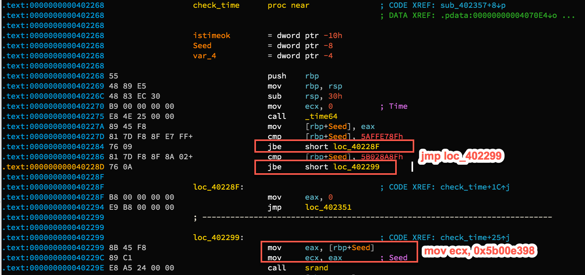光标定位到要打补丁的地方, 使用 ctrl-alt-k 打开 keypatch, 进行相关操作即可. 打完补丁后, 我们需要将补丁应用到原有的二进制文件上, 怎么搞呢? 在 IDA 中依次: Edit/Patch Program/Apply patchs to input file ..., 如下
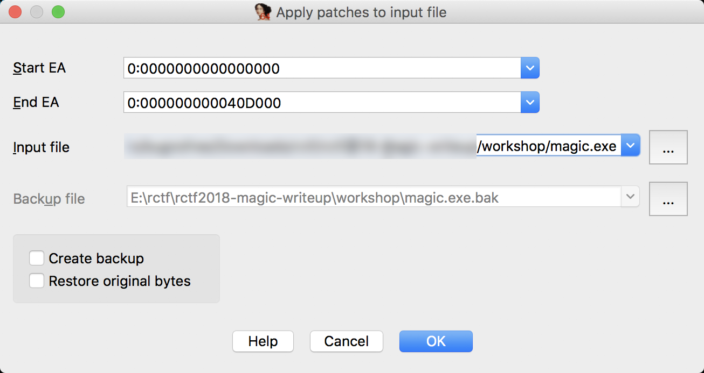在 check_time 处下断点, 动态调试, check_time 执行完后, 我们继续探索, 等待我们的将是另外一个挑战.
单步调试, 我们发现了下面这个函数, 流程如下
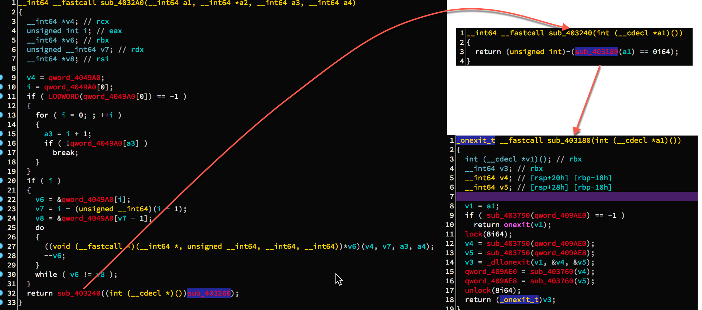因为这里是给函数传入一个函数指针, 所以我们要进来看一下, 最终到了 sub_403180 里面, 这里面带调用了 onexit 方法, 就是在程序退出的时候要执行的函数列表. 这里我们对 sub_403260 函数先下个断点. 继续向前调试, 我们就走到了 main 函数里面. main 函数里面其实没啥可看的, 如下
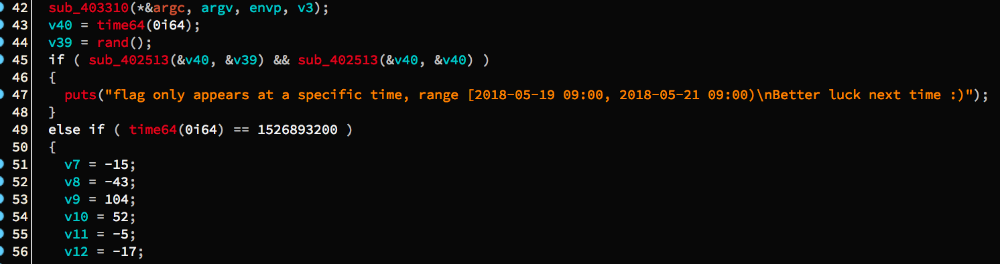sub_403310 函数进去后, 会检测自己是不是第一次执行, 如果是的话, 自己就退出. main 函数执行前, sub_403310 已经执行过一次了, 用交叉引用查看一下 main 的调用体, 然后上面就是 sub_403310. 好了, 总之到现在这个不是关键啦, 我们就不管他了.
接着看, 顺序而来的第一个 if 分支永远也不会执行, sub_402513 是一个用异或交换两个元素的函数, 然而当两个元素相等时, 这种异或交换的算法, 永远返回0. 大概是给我们开的一个玩笑? else 分支也是不可能执行的了, 这辈子大概都不可能执行了. 所以目标就在 onexit 注册的函数中! 按下 F9, 代码停在 sub_403260 中. 进一步查看, 就得到了另一个关键代码,如下图中的 sub_4023B1 函数(记做 final_battle).
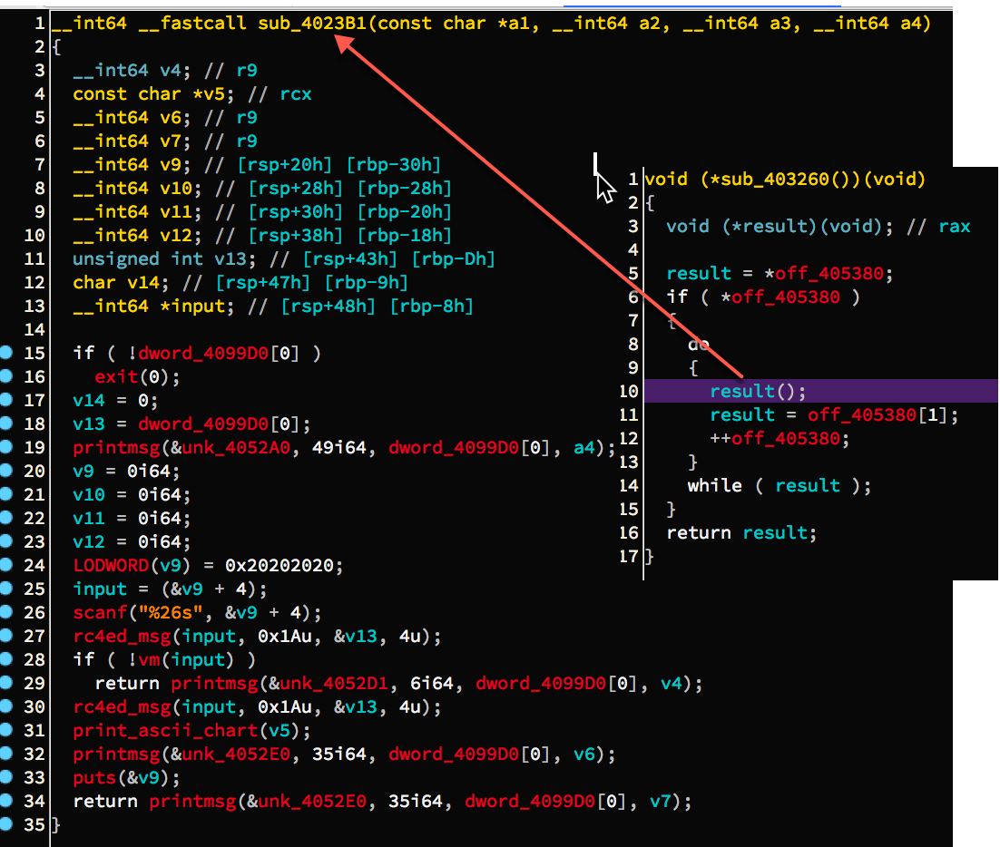在 sub_4023B1 函数中, 我已经重命名了一些变量或者函数名, 我们关注的是 rc4ed_msg 和 vm 函数. 先来看一下 rc4ed_msg 函数, 来熟悉一下 rc4 加密算法.
rc4 加密算法分为两个阶段
for i in range(256): S[i] = i
j = 0
for i in range(256):
j = (j + S[i] + key[ i % keylength ]) % 256
swap(S[i], S[j])
这一阶段主要用于初始化数组 S, 首先 S[i] 初始化为 i,
再对每一个 i 值, 计算下一个索引 j, 然后交换 S[i] 与 S[j].
i = 0
j = 0
while GeneratingOutput:
i = (i + 1) % 256
j = (j + S[i]) % 256
swap(S[i], S[j])
K = inputByte ^ S[(S[i] + S[j]) % 256]
output K
通过两个 S 盒指针, 不断交换指针处的的元素值, 再以元素值之和作为索引,
取 S 盒的元素, 最后与输入的字节流中的当前字节做异或操作, 产生一个输出.
看 wiki 上的一张图
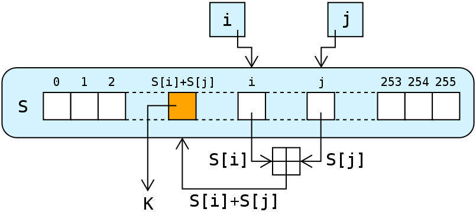总体上来说,第一阶段输入秘钥, 然后使用秘钥调度算法生成一个 S 盒, 第二阶段使用生成的 S 盒对输入的字节流进行加/解密. 现在让我们看看这个这个题中的代码. 进入 rc4ed_msg 函数, 如下
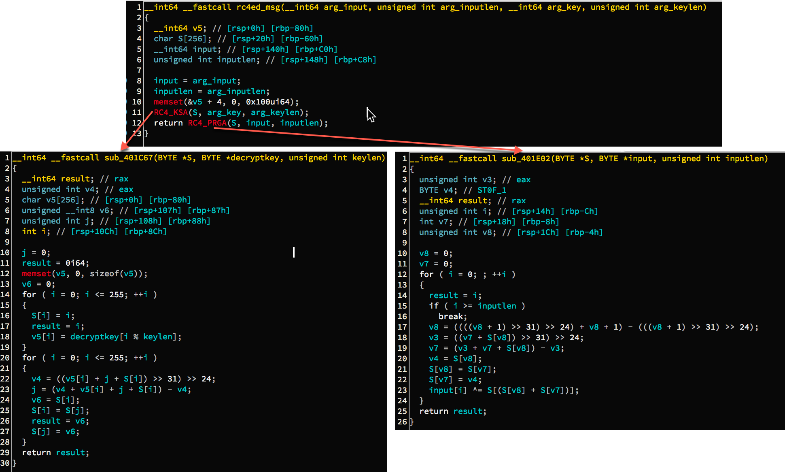KSA 阶段它的实现一模一样, 只不过多了一个 v5[i] 暂存中间变量, v4 是多余的. PRGA 阶段 v8 那一大堆实际上就是 v8 = v8 + 1, v3 是多余的. v8 和 v7 分别是两个指向 S 盒的指针. 实现都是一样的.
回到 final_battle 函数. 现在, 我们知道输入的数据长度为 26, 输入后, 输入的数据先用秘钥 dword_4099D0[0] 来对其加密, 加密后传入 vm 函数. 现在我们就来分析 vm 函数.
我刚开始看这种虚拟机指令时, 很不理解, 有时候吧, 你自己没办法表达出你的那种不理解 . 这就非常尴尬了, 问别人也不知道怎么问. 你只知道不理解, 但是不知道哪里不理解, 不知道有没有人和我感同身受. 此题前面的都不复杂, 我看到这里时, 看了挺久, 看不明白 , 搁置了下来, 又过了一周左右, 再回来看, 又看了一天, 竟然知道怎么搞了. 很神奇. 下面我就讲述一下怎么分析清楚它的指令.
这个虚拟机是采用 setjmp + longjmp 机制实现的. setjmp 和 longjmp 的原型如下
#include <setjmp.h> int setjmp(jmp_buf env); void longjmp(jmp_buf env, int val);
setjmp 保存将当前环境信息, 如寄存器的值, 保存到 env 中, longjmp 将会使用该 env 进行跳转, setjmp 执行后返回的值总是 0. longjmp 有两个参数, 第一个就是刚刚说的 env. 当 longjmp 执行完毕后, 效果就像是从 setjmp 返回, 返回值就是 longjmp 的第二个参数 val. 其执行流可以参考下图, 清晰明了.
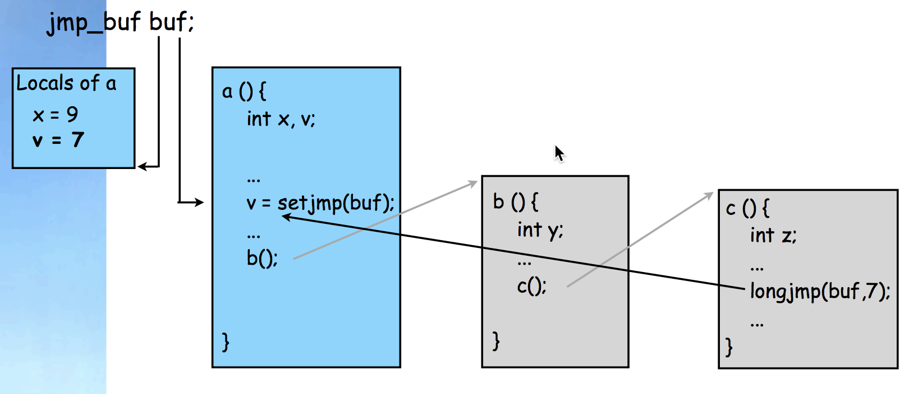setjmp/longjmp 有一个常用的错误用法. 看一个例子程序
#include <setjmp.h>
#include <stdio.h>
#include <stdlib.h>
int a(char *s, jmp_buf env)
{
int i;
i = setjmp(env);
printf("Setjmp returned -- %d\n", i);
printf("s = %s\n", s);
return i;
}
int b(int i, jmp_buf env)
{
printf("In b: i = %d, Calling longjmp\n", i);
longjmp(env, i);
}
int main()
{
jmp_buf env;
if(a("Bob", env) != 0) exit(0);
b(3,env);
return 0;
}
看看代码, 先执函数 a(), a 的返回值是 0, 所以继续执行 b(), 执行 b() 的时候, 调用了 longjmp, 于是又跑到 a() 中去了, 这回 a() 的 setjmp 返回 3, 于是回到了 main 函数的 if 中, 执行 exit(0). 那么执行这个程序, 这个程序将会输出如下内容:
Setjmp returned -- 0 s = Bob In b: I = 3, Calling longjmp Setjmp returned -- 3 s = Bob
然而, 如果你编译执行了, 你会发现其实上面的描述是错的. 正确的输出是
Setjmp returned -- 0 s = Bob In b: i = 3, Calling longjmp Setjmp returned -- 3 [1] 41956 segmentation fault ./tmp
s 没用正常输出, 为什么呢? 因为 a 函数执行完后, 其栈帧就被销毁掉了, b 函数跳是可以跳回去, 但是 a 中的 局部变量 s 已经被销毁掉了, 再去解引用这块内存, 自然会引起 segme fault 错误. 送上一张清晰明了的图
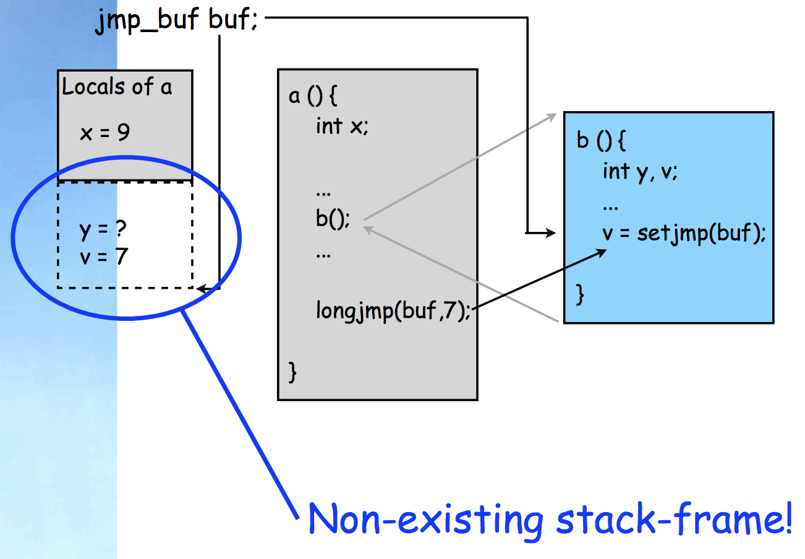更多详情可以查看 [1](非常好的 PPT).
现在进入正题. 看看虚拟机指令, 我们的目标是找到虚拟机的指令结构. vm 函数的代码略微有点长, 先总体上看一下思路, 如下图
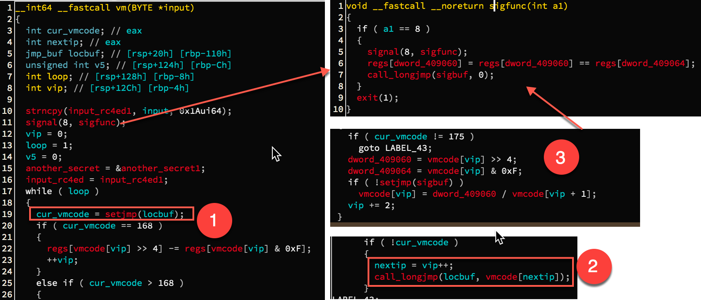先把 rc4 加密后的输入复制一份, 用 signal 注册一个函数, 这个函数用的很巧妙. 在虚拟机指令执行的时候, 会有标记 3 这样的分支, 可以看到里面有除法操作, 因此, 当除 0 的时候会引起异常, 这个时候就会转到 signal 注册的函数 sigfunc 中去执行操作, 执行完后再返回 3 中去, 决定下一步操作. 在 vm 函数中, 接着的是进入了一个 while 循环, 这就是虚拟机的循环主题, 循环体最开始的语句是 setjmp, 与其对应的是标记 2 中的代码. 第一次 setjmp 返回的返回的是 0, 然后就调到 2 处执行, 虚拟机的指令指针 vip 自增1. 然后取得下一条指令, 通过 call_longjmp 调到 1 处. 从 1 处开始往下继续处理的时, 就是判断当前是什么指令. 根据定义的指令类型来进行相应的操作.
该虚拟机在本程序中, 执行的所有指令字节码都位于 vmcode 数组中. 所以我们只要搞清楚这个数组中的所有指令功能即可. 怎么弄清楚呢? 单步调试.
为了方便, 我们可以在 setjmp 之后的一条汇编指令处设置一个条件断点, 让其打印出当前的虚拟机指令. 如下:
# 0x0000000000402A46 and 0x0000000000402D3C
raxval = idc.get_reg_value('rax')
if(raxval != 0): print '[+] ' + hex(raxval)
运行程序后, 中间会遇到一次除零异常(调试时将异常传递给程序)输出如下
[+] 0xabL [+] 0xabL [+] 0xabL [+] 0xaaL [+] 0xa9L [+] 0xa0L [+] 0xabL [+] 0xa9L [+] 0xabL [+] 0xacL [+] 0xaeL [+] 0xadL [+] 0xaaL [+] 0xaaL [+] 0xa9L [+] 0xa0L [+] 0xafL 402D5E: Integer divide by zero (exc.code c0000094, tid 1016) [+] 0xa7L [+] 0xccL Debugger: thread 1016 has exited (code 0)
根据这个输出, 我们可以暂时将 vmcode 做个划分, 如下所示
0ABh, 3, 0, 0ABh, 4, 1Ah, 0ABh, 0, 66h, 0AAh, 5, 2 0A9h, 53h, 0A0h, 5, 0ABh, 6, 0CCh, 0A9h, 56h, 0ABh,6, 0FFh, 0ACh, 56h, 0AEh, 50h, 0ADh, 0, 0AAh, 6, 5 0AAh, 5, 1, 0A9h, 53h, 0A0h, 5, 0AFh, 56h, 0, 0A7h,1, 0CCh, 0A9h, 35h, 0AAh, 5, 3, 0AFh, 54h, 0, 0A6h 0D1h, 0CCh,0, 0, 0, 0, 0, 0, 0
根据上面这个划分, 我们知道 0xcc, 0xa9, 0xab, 0xaf 的指令格式, 于是进一步推出所有要执行的指令形式
0ABh, 3, 0, 0ABh, 4, 1Ah, 0ABh, 0, 66h, 0AAh, 5, 2 0A9h, 53h, 0A0h, 5, 0ABh, 6, 0CCh, 0A9h, 56h, 0ABh,6, 0FFh, 0ACh, 56h, 0AEh, 50h, 0ADh, 0, 0AAh, 6, 5 0AAh, 5, 1, 0A9h, 53h, 0A0h, 5, 0AFh, 56h, 0, 0A7h,1, 0CCh, 0A9h, 35h, 0AAh, 5, 3, 0AFh, 54h, 0, 0A6h 0D1h, 0CCh, 0, 0, 0, 0, 0, 0, 0
现在我们搞清楚了所有要执行的指令形式. 那么接下来的任务就是搞清楚每一条指令的功能. 这就是单步调试了. 比如第一条要执行的指令 0xAB 3, 0.该指令对应的分支内容如下
regs[vmcode[vip]] = vmcode[vip + 1]; vip += 2;
每当取得一条指令时, vip 都会指向当前指令的第一个操作数. 也就是说, 这个时候, vip 指向 0xAB 3,0 中的 3. 因此这条指令的功能就是 regs[3] = 0. 那么很明显了, 0xAB x, y 就表示 regs[x] = y. 通过这种方式我们可以知道所有的虚拟机指令功能.
这个时候的另一个问题是, 虚拟机指令确实是在操作, 但是是在跟哪些数据打交道呢? 这个时候我们可以看一下 regs 在内存中的分布. 如下
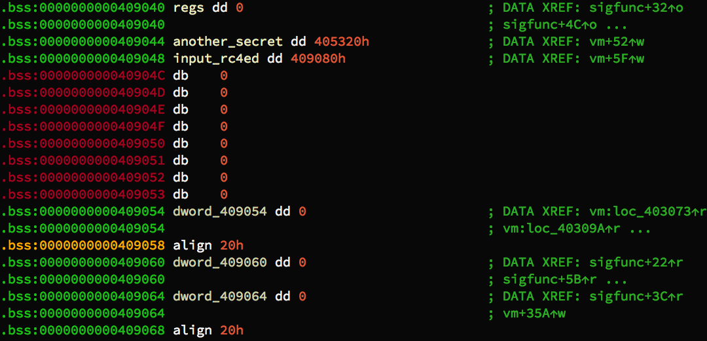再配合 0xAB 对应的汇编指令, 如下

可以初步推理 regs 对应的数组元素大小应该是 DWORD 类型的. 于是进一步的, 我们知道 regs[1] 中存放的是一个指针, 指向 another_secret, regs[2] 中存放的是一个指针, 指向 input_rc4ed. 到现在为止, 我们已经能把 regs 和我们最重要的两个数据 another_secret 以及 input_rc4ed 关联起来了, 接下来就是分析剩余其他指令的功能了. 具体做法就是单步调试, 已经分析过的指令可以直接跳过, 经过一段时间分析, 我们可以初步得到各个指令的功能如下
0ABh, 3, 0, ==> regs[3] = 0
0ABh, 4, 1Ah, ==> regs[4] = 0x1A
0ABh, 0, 66h, ==> regs[0] = 0x66
S2:
0AAh, 5, 2 ==> regs[5] = regs[2]
0A9h, 53h ==> regs[0x53 >>4] += regs[0x53 & 0xF]
0A0h, 5, ==> regs[5] = regs[5][0]
0ABh, 6, 0CCh,
0A9h, 56h,
0ABh, 6, 0FFh,
0ACh, 56h, ==> regs[0x56 >> 4 ] &= regs[0x56 & 0xF]
0AEh, 50h, ==> regs[0x50 >> 4 ] ^= regs[0x50 & 0xF]
0ADh, 0, ==> regs[0] = ~LOBYTE(regs[0])
0AAh, 6,5,
0AAh, 5, 1,
0A9h, 53h,
0A0h, 5,
0AFh, 56h, 0, ==> exception: 第二个操作数作为除数, 产生异常, 进而捕获异常, 执行操作.
==> op1_high = 5 op1_low = 6
==> regs[op1_high] = regs[op1_high] == regs[op1_low];
==> 如果 regs[op1_high] == regs[op1_low], 则 regs[op1_high] = 1
0A7h, 1, ==> if(regs[5]) {vip += op1; ++vip} else vip += 1
工作流程: vip 指向 0xA7 指令, 虚拟机读入该指令后, vip 自动加 1 指向操作数 1.
执行 0xA7 对应的操作流程时:
1) 如果 regs[5] 为 0, 那么仅仅执行 ++vip, 所以 vip 指向了 0xCC
2) 如果 regs[5] 为 1, 则 vip += op1; ++vip,
这样子的话, 相当于 vip 从当前位置向前移动了 op1 + 1 个位置, 此处为 2,
故跳过了 0xcc 指令, vip 指向了 0xA9. 因而下一条指令执行的是 0xA9.
由于 regs[5] 在上一条指令中由表达式 regs[5] == regs[6] 设置,
所以等价于
if(regs[5] == regs[6]) goto S1;
写成汇编的话就是
cmp regs[5], regs[6]
jz S1
0CCh, ==> break out
S1:
0A9h, 35h
0AAh, 5, 3,
0AFh, 54h, 0,
0A6h, 0D1h, ==> if(!regs[5]) {vip += 0xD1; ++vip} else ++vip;
1) 如果 regs[5] 为 0
这里 0xD1 在汇编指令中对应的是 movsx eax, al,
将其符号扩展保存到 eax 中, 使用 hex(ctypes.c_int8(0xd1).value) 我们得到 -0x2f.
也就是 vip -= 0x2f, ++vip, 等价于 vip -= 0x2e, 即 vip 前移 0x2e(46) 条指令.
因为现在 vip 指向第一个操作数 0xD1, 所以前移 46 条指令, 正好指向 S2 处.
2) 如果 regs[5] 为 1
此时 ++vip, 于是 vip 指向 0xCC
结合上一条指令, 可以得到
if(regs[5] != regs[4]) goto S2;
写成汇编代码有
cmp regs[5], regs[4]
jnz S2
0CCh
0 0 0 0 0 0 0
摸清楚了各个指令的功能, 我们可以从头往后再看一遍这些虚拟机指令, 分析得到下面的伪汇编代码. 下面的代码中比如 r3 就代表 regs[3] 等, r0/m8 就表示 regs[0] 的低 8 bits.
; r1 = another_secret
; r2 = input_rc4ed
mov r3, 0 ;i
mov r4, 0x1A
mov r0, 0x66
S2:
mov r5, r2
add r5, r3
mov r5, byte r5 ; input_rc4ed[i]
mov r6, 0xcc
add r5, r6 ; input_rc4ed[i] += 0xcc
mov r6, 0xff ;
and r5, r6 ; input_rc4ed[i] &= 0xff
xor r5, r0 ; input_rc4ed[i] ^= r0
not r0/m8 ; r0 = ~r0
movzx r0, r0/m8 ;
mov r6, r5 ; chi = input_rc4ed[i]
mov r5, r1 ; #3 chj = another_secret[i]
add r5, r3
mov r5, byte r5
cmp r5, r6 ; #2 if(chi == chj) goto S1; else goto STOP;
jz S1
STOP
S1:
add r3, r5 ; r5 is 1 if chi == chj, hence ++r3
mov r5, r3 ; #3 if(i != 0x1A) goto S2; else goto STOP
test r5, r4
jnz S2
STOP
所以代码逻辑就是
r0 = 0x66
for i in range(0x26):
chi = ((input_rc4ed[i] + 0xcc) & 0xff) ^ r0
r0 = ~ r0
chj = another_secret[i]
if(chi != chj) break
因为长度为 0x26, 每个字节的取值范围为 0 ~ 0xFF,这样的话, 我们可以暴力来求解
#! /usr/bin/env python3
#! -*- coding:utf-8 -*-
r0 = 0x66
#Python>for addr in range(0x405320,0x405340): print hex(idc.Byte(addr)) + ',',
#0x89, 0xc1, 0xec, 0x50, 0x97, 0x3a, 0x57, 0x59, 0xe4, 0xe6, 0xe4, 0x42, 0xcb, 0xd9, 0x8, 0x22, 0xae, 0x9d, 0x7c, 0x7, 0x80, 0x8f, 0x1b, 0x45, 0x4, 0xe8, 0x0, 0x0, 0x0, 0x0, 0x0, 0x0,
another_secret =[0x89, 0xc1, 0xec, 0x50, 0x97, 0x3a, 0x57, 0x59, 0xe4, 0xe6, 0xe4, 0x42, 0xcb, 0xd9, 0x8, 0x22, 0xae, 0x9d, 0x7c, 0x7, 0x80, 0x8f, 0x1b, 0x45, 0x4, 0xe8, 0x0, 0x0, 0x0, 0x0, 0x0, 0x0]
right_input_rc4d = []
for i in range(0x1A):
for j in range(0xFF + 1):
chi = ((j + 0xCC ) & 0xff) ^ r0
if(chi == another_secret[i]):
right_input_rc4d.append(j)
# Do not write as r0 = ~r0
r0 = (~ r0) & 0xff
print(','.join([hex(i) for i in right_input_rc4d]))
#0x23,0x8c,0xbe,0xfd,0x25,0xd7,0x65,0xf4,0xb6,0xb3,0xb6,0xf,0xe1,0x74,0xa2,0xef,0xfc,0x38,0x4e,0xd2,0x1a,0x4a,0xb1,0x10,0x96,0xa5
所以我们输入的数据经过 rc4 加密后, 应该是
238cbefd25d765f4b6b3b6fe174a2effc384ed21a4ab11096a5
因为 rc4 是对称加密的, 所以我们只需要把该值和秘钥输入加密函数即可得到正确的输入. 在 call vm 处下断点, 将 rcx 所指内存写入上述数据, 在 call vm 处下断点, 然后在 ida 中执行如下脚本:
# idapython
# call vm
rc4ed = [0x23,0x8c,0xbe,0xfd,0x25,0xd7,0x65,0xf4,0xb6,0xb3,0xb6,0xf,0xe1,0x74,0xa2,0xef,0xfc,0x38,0x4e,0xd2,0x1a,0x4a,0xb1,0x10,0x96,0xa5]
rcx = idc.GetRegValue('rcx')
i = 0
for addr in range(rcx, rcx + 0x1A):
idc.PatchByte(addr, rc4ed[i])
i = i + 1
然后运行程序, 看一下内存, 如下所示
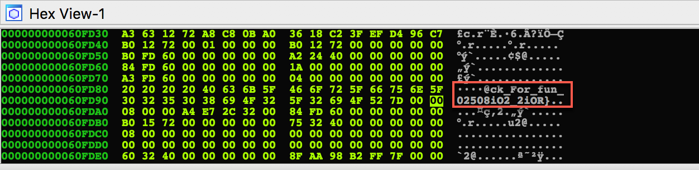将这个 @ck_For.. 开头的字符串输入即可得到如下字符画, 这个字符画初看看的很懵逼啊, 后来和朋友(@chkds)聊天的时候, 他给我画了一下, 我才知道, 原来是看空隙啊. 我也手动画了一下.如下.
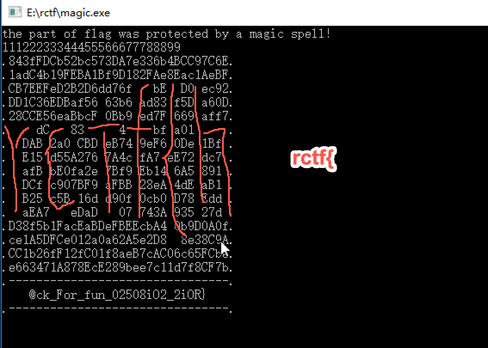于是 flag 就是 rctf{h@ck_For_fun_02508iO2_2iOR}
做完了, 竟然有点空虚.